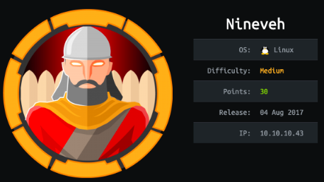

Linux Boxes
nineveh
nmap
http/https
cert
gobuster
http
https
hydra bf
/departmnet
homepage
notes
Local File Inclusion Vuln
/db
pass
initial foothold
create database and table w/ malicious php system call
LFI to RCE
RCE through burp
reverse shell
listener
privesc to root
LinEnum.sh
PSPY
pspy64
custom ippsec procmon script
output
chkrootkit
exploit-db.com/exploits/33899
/tmp/update
additional foothold
binwalk
nineveh.priv
nineveh.pub
/etc/knockd
nmap port knocking
nmap scan
ssh
user/root
lessons learned
nineveh
